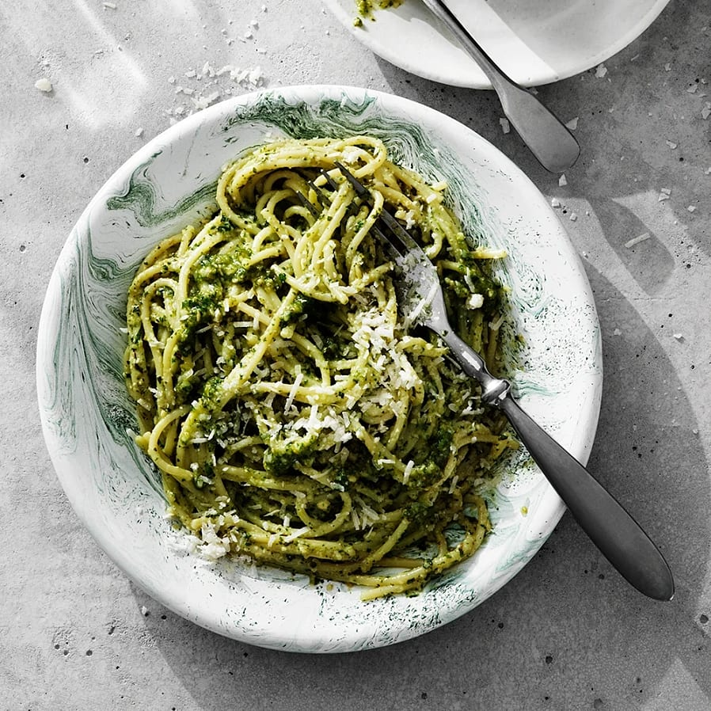

Pesto med pasta
Denna superenkla och snabblagade pesto med pasta kommer bli en ny favorit för stressiga dagar. Den goda peston av vitlök, basilika, ost, nötter och olja blandar du med pastan, enkelt och så gott.

Denna superenkla och snabblagade pesto med pasta kommer bli en ny favorit för stressiga dagar. Den goda peston av vitlök, basilika, ost, nötter och olja blandar du med pastan, enkelt och så gott.